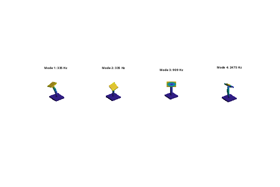

%DEMOASSEMBLY Modal analysis of a three-part STL assembly. % An elastic base plate and pillar, meshed separately (non-conforming), and % a rigid top plate (payload) are connected, clamped at the bottom, and % reduced to K, M for dynamic analysis. Requires Gmsh (set GMSH if needed). addpath(fileparts(fileparts(mfilename('fullpath')))); out = fullfile(tempdir, 'femDemo'); if ~isfolder(out), mkdir(out); end % geometry in mm, written as STL files (stand-in for a CAD export) fembd.boxSTL(fullfile(out, 'base.stl'), [-40 -40 0], [40 40 10]); fembd.cylinderSTL(fullfile(out, 'pillar.stl'), [0 0], 8, 10, 110); fembd.boxSTL(fullfile(out, 'top.stl'), [-25 -25 110], [25 25 116]); % bodies: mesh with Gmsh, mm -> m, assign materials steel = fembd.material(210e9, 0.30, 7850); alu = fembd.material(70e9, 0.33, 2700); base = fembd.Body(fullfile(out, 'base.stl'), steel, Size = 8, Scale = 1e-3); pillar = fembd.Body(fullfile(out, 'pillar.stl'), alu, Size = 3, Scale = 1e-3); top = fembd.Body(fullfile(out, 'top.stl'), steel, Size = 6, Scale = 1e-3, Rigid = true); % assembly: connections and boundary conditions a = fembd.Assembly(); a.add(base); a.add(pillar); a.add(top); a.tie('base', 'pillar'); % bonded (finer mesh as slave) a.tie('pillar', 'top', Stiffness = 1e13); % elastic joint to the rigid plate, N/m^3 a.fix('base', @(X) X(:,3) < 1e-9); % clamp bottom face tic; [K, M, T] = a.system(); t = toc; fprintf('%d dofs (%d after constraints), assembled in %.1f s\n', a.nDof, size(K, 1), t); % natural frequencies and modes [V, f] = fembd.modes(K, M, 6); figure('Color', 'w'); for k = 1:4 subplot(1, 4, k); u = T*V(:,k); % node dofs, then rigid-body dofs a.plot(u, 0.03/max(abs(u(1:3*size(a.X, 1))))); title(sprintf('Mode %d: %.0f Hz', k, f(k))); axis off end % Craig-Bampton model: the 6 dofs of the rigid top plate (at its centroid) % are kept as boundary, plus 20 fixed-interface modes ib = a.qdof(a.dof('top')); % [ux uy uz rx ry rz], indices into q [Kc, Mc, Vc] = fembd.craigBampton(K, M, ib, 20); [~, fc] = fembd.modes(Kc, Mc, 6); % lumped-mass model, e.g. for explicit time integration [Kl, Ml] = a.system(Lumped = true); [~, fl] = fembd.modes(Kl, Ml, 6); disp(table((1:6)', f, fc, fl, 'VariableNames', {'mode', 'full_Hz', 'CB_Hz', 'lumped_Hz'})); % state space of the 26-dof CB model: vertical force in, vertical displacement out. % The full displacement field is u = T*Vc*x(1:nr). nr = size(Kc, 1); Dc = 1e-5*Kc + 1*Mc; % Rayleigh damping A = [zeros(nr), eye(nr); -Mc\Kc, -Mc\Dc]; Bu = [zeros(nr, 1); Mc\((1:nr)' == 3)]; % x(3) is the plate's uz Cy = [(1:nr) == 3, zeros(1, nr)];
31863 dofs (25104 after constraints), assembled in 0.7 s
mode full_Hz CB_Hz lumped_Hz
____ _______ ______ _________
1 335.24 335.24 335.16
2 335.45 335.45 335.37
3 909.41 909.41 907.13
4 2474.7 2474.7 2464.2
5 2477.9 2477.9 2467.6
6 4942.3 4942.3 4942.2
